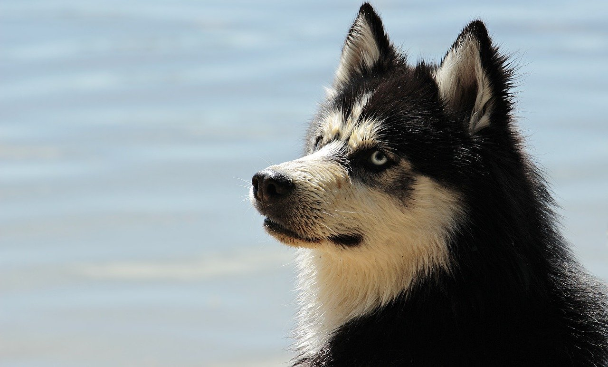

개
한자어로는 견(犬) 이외에 구(狗)·술(戌) 등으로 표기된다.
기(猉)·교(狡) 등은 작은 개를 뜻한다.
Origin
개는 야생동물 가운데 가장 먼저 가축화된 동물로, 조상은 이리·자칼 등이라고 하며,
또한 오스트레일리아의 딩고(dingo)나 서남아시아에 반야생 상태로 서식하다가 멸종된 야생종 중에서 생긴 것으로 추측하기도 한다.
이러한 야생종이 세계의 몇 개 지역에서 가축화되어 그들 사이의 선택·교배에 의하여 현재와 같이 약 2백여 품종이 생긴 것으로 생각된다.
인간에 의해 순화, 사육되었다는 가장 오래된 기록은 페르시아 베르트동굴의 것으로 서기전 9500년경으로 추산된다.
서기전 9000년경으로 추산되는 독일 서부의 셍켄베르크 개는 크기와 두개골의 형태가 딩고와 대단히 비슷하다.
Characteristic
품종에 따라서 크기는 매우 다양하여 어깨높이는 8∼90㎝, 몸무게 0.4∼120㎏, 털은 긴 것과 짧은 것이 있고, 빛깔이나 무늬도 다양하다.
꼬리 끝에 흰 무늬, 눈 위에 원형의 담색 무늬, 어깨에 십자형의 짙은 색깔의 무늬 등이 나있는 것들도 있다.
귓바퀴는 크고 거의 삼각형으로 늘어진 것, 선 것 등이 있으며 앞으로 늘어뜨리면 너구리류와는 달리 눈까지 내려온다.
눈동자는 여우·너구리류와는 달리 원형이다.
입술이 두툼하고 끝이 뾰족하지 않으며 비근부(鼻根部)에서 안간부(眼間部)에 걸쳐 뚜렷한 단(段)이 있다.
이빨은 거의 나이와 함께 정기적으로 발생, 변화하기 때문에 나이 감정에 이용할 수 있다.
개는 태어나면서부터 어미의 젖을 냄새로써 찾을 수 있을 정도로 후각이 예민하다.또한, 청각도 발달되어 있다.
Life
개는 오랜 세월을 통해서 가축으로 순화되었기 때문에 형태의 변화가 심하고 그 분포도 세계적이다.
야생하는 경우에는 암·수컷이 여러 마리로 집단을 이루기도 하는데, 순위가 정해져 있으며 정해져 있지 않을 때에는 싸워서 우열을 정한다.
임신기간은 62∼68일, 생후 약 1년 후에 번식이 가능하며, 한배에 보통 4∼6마리를 낳는다.
새끼는 6∼7주간 젖을 먹으나 4주 정도부터 부드러운 먹이나 어미가 토해 낸 반 소화상태의 먹이를 먹기 시작한다.
수명은 보통 12∼16년이나 최고 34년까지 산 기록도 있다. 투견·엽견·경기견 등은 비교적 단명하나 집에서 기르는 개는 20년까지도 산다.
With People
개는 수렵·목양·경주·수색·애완 등을 목적으로 하는 이외에,
에스키모인·아메리카 인디언·아시아의 동북 및 시베리아의 북부지방 등에서는 썰매를 끄는 데 개가 이용되고,
티베트에서는 짐을 실어 나르는 데 이용한다.
우리나라에서는 예로부터 개가죽으로 장구를 만들었고 꼬리로는 비를, 털가죽으로는 방한용 외투와 모자 등을 만들었다.
조선시대 중종 때의 전라감사 정엄(鄭淹)은 통신업무에 토종개를 이용하여 막대한 통신비를 절약했다고 한다.
발달된 후각으로 성별이나 개체 등을 구별할 수 있기 때문에 범인 추적을 목적으로 하는 경찰견이나 수색견으로도 이용된다.
Tale
개는 사람에게 충실하고 의리가 있는 가축으로서 우리나라에는 충견설화가 많다.
경상북도 선산군 도개면 신림동의 의구총(義狗塚)과 의구비, 평안남도 용강군 귀성면 토성리와 평양 선교리의 의구총,
충청남도 부여군 홍산면 북촌리의 개탑 등은 화재로부터 주인을 구하고 죽은 개의 충직과 의리를 전하고 있다.
1282년(충렬왕 8)에는 개성의 진고개에서 개가 사고무친의 눈먼 아이를 데리고 다니면서 밥을 얻어 먹이고 물을 먹여 키웠으므로
이에 관청에서는 개에게 벼슬을 내리고 그 충직함을 기렸다고 한다.
Proverb
개와 관련된 우리 나라의 속담은 여러 가지가 있다.
본래의 제 천성은 고치기 어렵다는 뜻으로 ‘개 꼬리 삼년 묻어 두어도 황모 못된다.’고 하며,
평소에 좋아하는 것을 싫다고 할 때에 ‘개가 똥을 마다 한다.’고 한다.
돈을 벌 때는 귀천을 가리지 않고 벌어서 값지게 산다는 뜻으로 ‘개같이 벌어서 정승같이 산다.’고 하며,
보통 때에는 흔하던 물건도 필요할 때에 찾으면 드물고 귀하다는 뜻으로 ‘개똥도 약에 쓰려면 없다.’고 한다.
[출처: 한국민족문화대백과사전(개)]
Gallery


- 